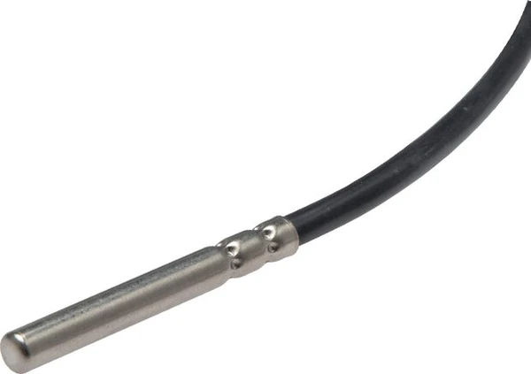
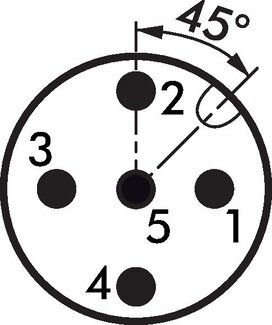

Cảm biến nhiệt độ Pt100 (RTD – Resistance Temperature Detector / Widerstandsthermometer) WIKA đo nhiệt độ dựa trên thay đổi điện trở của platinum, cho độ chính xác cao và tín hiệu ổn định. Bài viết giải thích nguyên lý, cách đấu 2/3/4-wire và class A/B. Fast Group Engineering là đại lý cung cấp hàng chính hãng WIKA (Germany) tại Việt Nam.

Gợi ý chọn nhanh
- Cần đọc nhiệt độ tại chỗ hoặc đưa tín hiệu nhiệt về hệ thống.
- Cần chọn bimetal, RTD Pt100, transmitter hoặc thermowell.
- Cần thay thế theo chiều dài thân nhúng và kiểu chân.
- Dải nhiệt, chiều dài stem và đường kính thân.
- Kiểu chân, ren, vật liệu và môi chất.
- 2/3/4-wire, output 4-20 mA hoặc yêu cầu thermowell.
- Danh mục đồng hồ nhiệt độ WIKA.
- Bài bimetal thermometer.
- Bài RTD Pt100 và thermowell.
Tóm tắt nhanh
- Pt100 = điện trở platinum 100 Ω tại 0°C, tăng theo nhiệt độ (tuyến tính tốt).
- Đấu 2-wire (đơn giản, kém chính xác), 3-wire (phổ biến), 4-wire (chính xác nhất).
- Class A chính xác hơn Class B.
- Thường ghép temperature transmitter để ra tín hiệu 4–20 mA.

Nguyên lý Pt100
Điện trở của dây platinum tăng gần tuyến tính theo nhiệt độ. Chuẩn Pt100: 100 Ω ở 0°C, ~138.5 Ω ở 100°C. Đo điện trở → suy ra nhiệt độ. Ưu điểm: chính xác, ổn định lâu dài, dải rộng (khoảng -200…600°C tùy cấu tạo).
Đấu dây 2/3/4-wire khác nhau thế nào?
| Kiểu đấu | Bù điện trở dây | Độ chính xác | Dùng khi |
|---|---|---|---|
| 2-wire | Không bù | Thấp (sai do điện trở dây) | Khoảng cách rất ngắn |
| 3-wire | Bù một phần | Tốt, phổ biến công nghiệp | Đa số ứng dụng |
| 4-wire | Bù hoàn toàn | Cao nhất | Phòng lab, đo chính xác |
Điện trở dây dẫn cộng vào phép đo gây sai số; 3-wire và 4-wire loại bỏ ảnh hưởng này ở mức khác nhau.
Sai số Class A vs Class B (IEC 60751)
| Class | Dung sai tại 0°C | Đặc điểm |
|---|---|---|
| Class A | ±0.15°C | Chính xác hơn, cho đo yêu cầu cao |
| Class B | ±0.30°C | Phổ thông công nghiệp |
Sai số tăng theo nhiệt độ; chọn class theo yêu cầu độ chính xác của vòng đo.
RTD Pt100 vs Thermocouple vs Bimetal
| Tiêu chí | Pt100 (RTD) | Thermocouple (TC) | Bimetal |
|---|---|---|---|
| Độ chính xác | Cao | Trung bình | Trung bình |
| Dải nhiệt | -200…600°C | Rất rộng (đến >1000°C) | Vừa |
| Tín hiệu | Điện trở → 4–20 mA | mV | Kim cơ khí |
| Ứng dụng | Đo chính xác vừa/thấp-trung | Nhiệt rất cao | Đọc tại chỗ |
Nhiệt độ rất cao → dùng thermocouple; đọc tại chỗ đơn giản → bimetal; chính xác dải trung → Pt100.
Cách chọn RTD Pt100 WIKA (Checklist)
- [ ] Dải nhiệt cần đo.
- [ ] Kiểu đấu: 3-wire (phổ biến) hay 4-wire (chính xác).
- [ ] Class: A hoặc B.
- [ ] Chiều dài & đường kính que đo (insertion).
- [ ] Kết nối: ren, đầu củ (connection head), thermowell.
- [ ] Có ghép transmitter (4–20 mA) hay đọc điện trở trực tiếp.
Vì sao điện trở dây gây sai số — và cách 3/4-wire xử lý?
Bản chất Pt100 là đo điện trở của phần tử platinum rồi quy ra nhiệt độ. Nhưng dây dẫn nối từ cảm biến về bộ đọc cũng có điện trở riêng, và điện trở này cộng thẳng vào kết quả. Ở kiểu 2-wire, toàn bộ điện trở dây bị tính nhầm thành nhiệt độ — dây càng dài, sai số càng lớn (có thể vài độ). Kiểu 3-wire dùng thêm một dây tham chiếu để bộ đọc trừ bớt phần lớn điện trở dây, đủ chính xác cho hầu hết ứng dụng công nghiệp. Kiểu 4-wire tách hoàn toàn mạch cấp dòng và mạch đo áp, loại bỏ ảnh hưởng dây gần như tuyệt đối — dùng cho phòng thí nghiệm và đo chuẩn. Đây là lý do 3-wire là mặc định công nghiệp, còn 4-wire dành cho nơi cần độ chính xác cao nhất.
Vì sao thường ghép với transmitter?
Tín hiệu gốc của Pt100 là điện trở (ohm), rất nhạy với nhiễu và suy hao khi truyền xa. Vì thế trong thực tế, người ta thường lắp temperature transmitter ngay tại đầu củ cảm biến (head-mounted) để chuyển điện trở thành tín hiệu 4–20 mA ổn định, chống nhiễu, truyền được khoảng cách dài về PLC/DCS. Transmitter cũng giúp tuyến tính hóa và cho phép cài lại dải đo. Với vòng đo quan trọng hoặc dây tín hiệu dài, ghép transmitter gần như là tiêu chuẩn.
Đầu củ (connection head) & kiểu lắp
RTD công nghiệp thường có đầu củ (connection head) dạng B, J hoặc tương tự để chứa terminal hoặc transmitter head-mounted, bảo vệ đấu nối khỏi bụi ẩm (IP65/66). Que đo nối process qua ren, mặt bích hoặc lắp trong thermowell. Với môi chất áp lực, ăn mòn hay lưu tốc cao, thermowell gần như bắt buộc để bảo vệ que RTD và cho phép rút cảm biến ra bảo trì mà không dừng hệ thống.
FAQ
Pt100 và Pt1000 khác gì? Pt1000 = 1000 Ω ở 0°C, ít nhạy điện trở dây hơn; Pt100 phổ biến hơn trong công nghiệp.
Nên chọn 3-wire hay 4-wire? 3-wire đủ cho hầu hết ứng dụng công nghiệp; 4-wire cho đo chính xác/phòng lab.
Có cần thermowell không? Nên dùng trên đường process áp lực để bảo vệ và cho phép thay không xả môi chất.
Sai số Class A/B có cố định theo nhiệt độ không?
Không. Dung sai tăng dần khi xa 0°C. Class A hẹp hơn Class B ở mọi điểm, nên chọn Class A khi cần độ chính xác cao trên dải rộng.
Sai lầm thường gặp
- Dùng 2-wire cho dây dài: điện trở dây tính nhầm thành nhiệt độ, sai vài độ mà không biết.
- Truyền tín hiệu điện trở đi xa không qua transmitter: dễ nhiễu và suy hao; nên chuyển sang 4–20 mA tại đầu củ.
- Que đo quá ngắn: phần tử cảm biến không ngập đủ, đọc thấp hơn thực tế.
- Bỏ qua thermowell với môi chất áp lực/ăn mòn: que RTD hỏng nhanh, bảo trì phải dừng hệ thống.
- Chọn Class B khi vòng đo cần độ chính xác cao: nên cân nhắc Class A cho điều khiển chặt.
Ví dụ chọn nhanh
Đo nhiệt dầu trong bồn gia nhiệt, đưa về PLC: chọn Pt100 Class B (hoặc A nếu cần chính xác), đấu 3-wire, que đo đủ ngập, đầu củ kèm transmitter head-mounted 4–20 mA, lắp qua thermowell ren G½. Đo nhiệt chuẩn trong phòng thí nghiệm: chọn Class A, đấu 4-wire để loại bỏ điện trở dây. Cùng nền tảng Pt100, chỉ thay class, kiểu đấu và phụ kiện theo mức chính xác và điều kiện lắp.
Có thể thay Pt100 bằng Pt1000 để bù dây tốt hơn không?
Pt1000 có điện trở gốc cao gấp 10 lần nên ảnh hưởng điện trở dây tương đối nhỏ hơn, hữu ích cho một số thiết kế. Tuy nhiên Pt100 vẫn phổ biến và tương thích rộng hơn với thiết bị công nghiệp; chọn theo thiết bị đọc hiện có.
Cần tư vấn hoặc báo giá RTD Pt100 WIKA?
Gửi dải nhiệt, kiểu đấu, class, chiều dài que, kết nối để nhận báo giá trong 24h.
- Email: minhduc@fastgroup.vn · Zalo: (+84) 938 888 958
Fast Group Engineering – đại lý cung cấp hàng chính hãng WIKA (Germany) tại Việt Nam.
Bài liên quan: [Đồng hồ nhiệt độ bimetal WIKA] · [Temperature transmitter compact] · [Thermowell/Schutzrohr] · [Bộ điều khiển nhiệt độ gắn tủ]